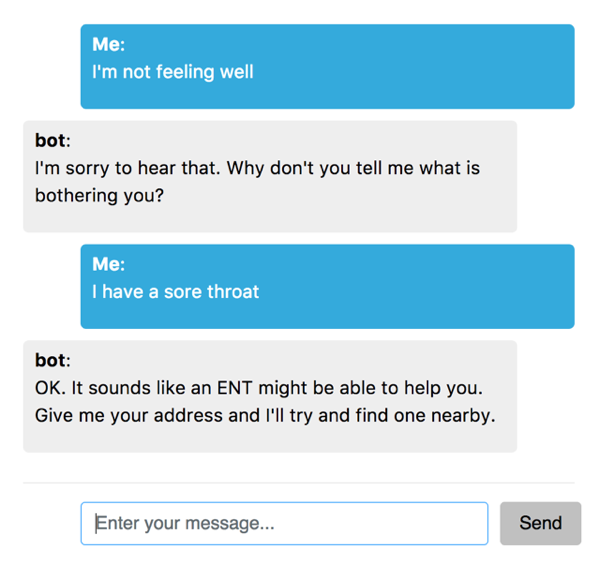
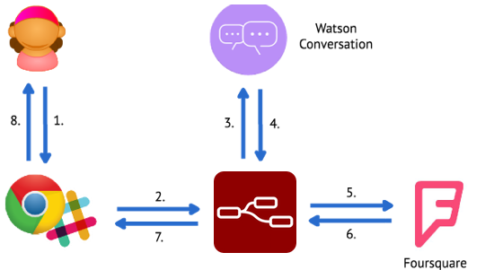
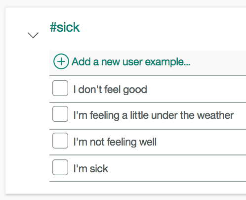
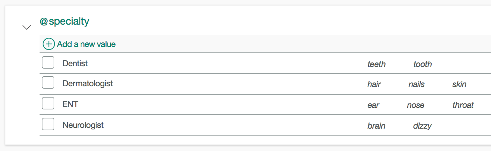
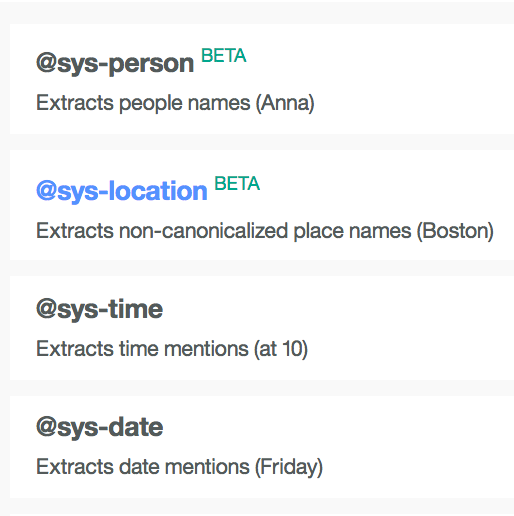
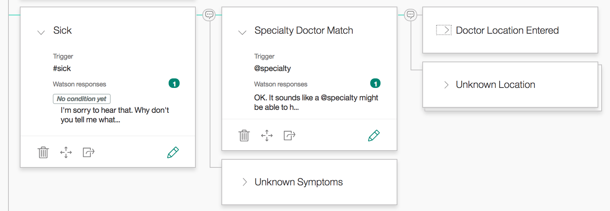

@markwatsonatx
Prerequisites
Bluemix Account
IoT Platform Starter
Watson Visual Recognition
Watson Conversation
Course Material
github.com/markwatsonatx/
ibm-finish-line
Classifying Images w/ Watson Visual Recognition
Chatbots w/ Watson Conversation
Chatbot Architecture

What are we building?

Health Bot Architecture

Watson Conversation
Watson Conversation combines a number of cognitive techniques to help you build and train a bot - defining intents and entities and crafting dialog to simulate conversation.
Watson Conversation Concepts
Intents
Entities
Dialog
Context
Intents
Entities
System Entities
Dialogs
Context
Passed between Watson Conversation and application
Keeps track of current dialog in the conversation